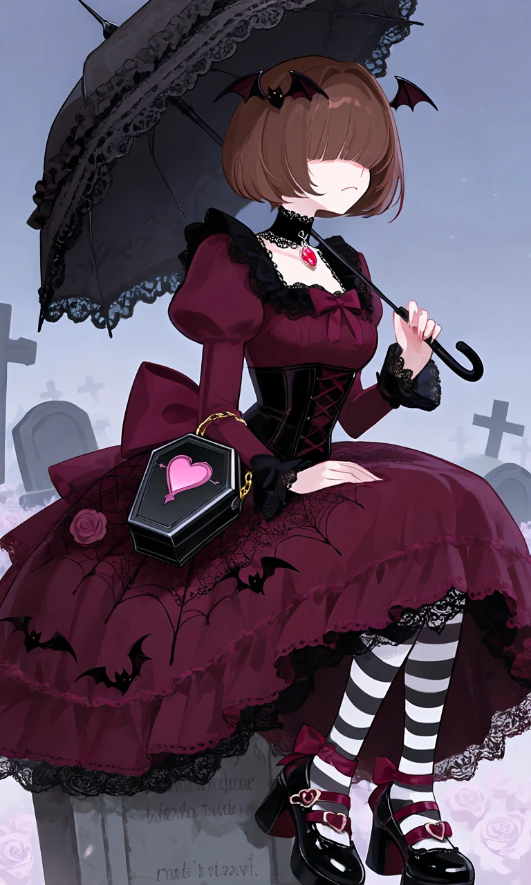
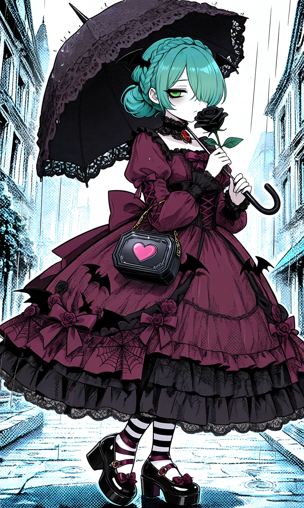

Coffin Sweetheart

Outfit Prompt
She wears a charming gothic Lolita dress in deep burgundy, black, and dusty rose. The dress features a fitted corset-style bodice with crisscross ribbon lacing, long puffed sleeves with lace cuffs, and a dramatic layered skirt decorated with tiny bats, roses, and delicate spiderweb lace. A large burgundy bow decorates the back of her dress.
Accessories include a miniature black lace parasol, a black velvet choker with a red gemstone, tiny bat-wing hair ornaments, and a small coffin-shaped handbag decorated with a pink heart.
Her shoes are shiny black platform Mary Janes with burgundy ribbon straps, heart-shaped buckles, and black-and-white striped stockings.
Outfit Examples



